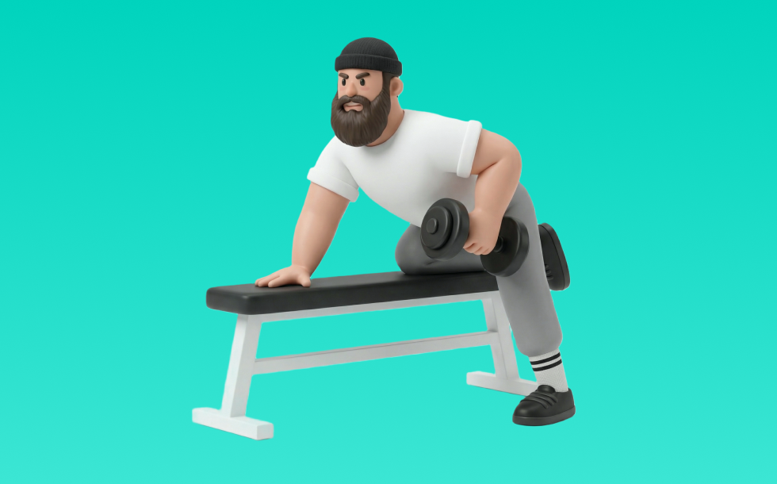

ダンベルロウ(片手)

ダンベルロウ(片手)とは、ダンベルを使って「引く」動作で背中（広背筋、僧帽筋、菱形筋）＋腕（上腕二頭筋）を鍛える種目です。可動域が広く、左右のバランスを整えやすいのが特徴で、体幹を固め、みぞおち付近へ引いて戻す動作を繰り返します。背中の厚み・広がり作りや姿勢改善が期待できます。
- 対象部位
- 背中
- 器具
- ダンベル
- 記録形式
- 重量・回数
- 別名
- ワンハンドロウ / one arm row
YouTube動画
-
広背筋を鍛えるダンベルロウイングのやり方【筋トレ】
-
ダンベルを使って背中を鍛える最強の種目ダンベルローイングの正しいやり方を徹底解説【背中トレ】
-
【ダンベルで行う】背中に効かない人がやるべき種目3選を解説します
-
【実演解説】できれば必ずデカくなる背中トレ超おすすめ種目！！
-
【お家でできる背中トレ】ダンベルロー徹底解説！初心者も◎
-
9割が間違う「難しい」ワンハンドロウ徹底ガイド！初中級者向け 背中の広背筋外側を作る！
-
【筋トレ】ダンベル・ベントオーバーローのやり方 | ボディビルチャンピオンが解説【ビーレジェンド プロテイン】
-
【広背筋筋トレ】インクラインダンベルローイングのやり方・フォーム・コツ | 「背中に効かない」という方へ
-
ダンベルベントオーバーローイングで背中を効果的に鍛えるやり方！広背筋と僧帽筋を鍛え分けるフォーム等を徹底解説
-
【キレイな背中を作ろう】ワンハンドローイングのやり方【ビーレジェンド チャンネル】
-
広背筋を鍛えるダンベル筋トレ「ワンハンドロウ」の正しいやり方【左右 各10回×3セット】
-
【ワンハンドローイング】背中を鍛えるコツと初心者向けフォーム解説
-
【背中トレ】身体が硬い人もできる！ワンハンドロウのやり方解説！
YouTubeショート
-
持田選手とハムちゃんにワンハンドローにについてレクチャーしていてもらいました！次はどの種目の解説をやってほしいかコメントしてね！#筋トレ #volix #ちょこっと惜しい
-
絶対やるべき背中トレ種目！その名はワンハンドロー🥹#背中トレ #フィットネス #筋トレ
-
ワンハンドローイングよくあるＮＧフォームNo.1
-
【ダンベルローイングの正しいやり方】理想と間違い#仙台パーソナルジム #仙台ジム#tryve#トライヴ#筋トレ初心者#ボディビル#ボディメイク
-
【背中を鍛える】ダンベルベントオーバーロウ【ボディメイク・ダイエット】
-
背中に効かせる背中トレ#背中トレ#背中トレーニング#ワンハンドロウ
-
背中が成長しないベントオーバーロウ #筋トレ
-
自宅で刃牙の背中を作る筋トレ！ダンベルロウの方法！#shorts
-
ダンベルロウのやり方#初心者 #ダンベル
-
〔筋トレ〕ダンベルロウ(インクラインベンチver)#筋トレ #ダイエット #減量 #背中
-
ダンベルだけで背中をデカくする筋トレ💪
-
ダンベル・ベントオーバーローの正しいやり方 | ボディビル日本チャンピオンが解説 #shorts【ビーレジェンド プロテイン】
-
ワンハンドロウのやり方｜背中に効く片手ダンベルの引き方｜筋トレ初心者
-
【筋トレ初心者必見 ! |ダンベルワンハンドローのやり方】日本人初ミスター・オリンピアに出場した、山岸プロが解説！ #山岸秀匡 #筋トレ初心者 #ローイング 横verはコメ欄から！
-
背中が成長しないラットプルダウン
-
【ダンベル】背中トレ4選 #筋トレ
-
みなさんはワンハンドローイングやってますか？持田選手とコロチキ西野さんが広背筋に効くトレーニングをレクチャーしてくれました！#筋トレ #volix #広背筋 #ちょこっとおしい #腕トレ
-
【有料級】世界一わかりやすいワンハンドローイング#shorts
-
正しいサイドレイズ4つのポイント #筋トレ
-
個人的に最も効果のある背中の種目3つを紹介 #筋トレ #フィットネス
-
家トレ、ダンベルだけでもいい体になれる？#筋トレ #ホームトレーニー
-
ワンハンドダンベルロウ『フォーム作り』#shorts #持田式 #筋トレ
-
世界最大のダンベルがヤバすぎる【世界の筋肉】
-
背中が痛くなるくらい効くワンハンドローのやり方※エゴイスト
-
【必見!浜口京子がダンベル50KGワンハンドダンベルローイングに挑戦!】#浜口京子#筋力トレーニング #アニマル浜口トレーニングジム #gym#asakusa#tokyo#浅草
-
ばちばちに効く肩のリア種目
-
正しいショルダープレス4つのポイント #筋トレ
-
【背中トレ解説】ダンベル・シュラッグ #筋トレ解説 #背中トレ #背中トレーニング
-
正しいダンベルベンチプレス5つのポイント 【筋トレ】
-
【筋トレ】ワンハンドローのコツ！
動作方法
- 体幹を安定させ、背中が丸まらない姿勢を作る
- 肘を後方へ引き、肩甲骨を寄せる
- 勢いを使わず、ゆっくり戻す
動作ポイント
- 背中を丸めない
- 首に力を入れすぎない
- 戻しを速くしすぎない
ワンポイントアドバイス
- 腕ではなく背中で引く感覚を優先する
- 反動が増えたら重量を一段下げる
目的別回数設定
目的や体力に応じた一般的な目安です。無理のない範囲で調整してください。
- 筋力アップ
- 1〜5回
- 筋肥大
- 6〜12回
- 持久力アップ
- 13〜20回
YouTube動画について
動画はYouTubeの公開情報をもとに表示しています。内容は投稿者によるもので、Biggrによる監修ではありません。
アプリを入手
筋トレやトレーニングの記録はBiggrにお任せください。今すぐ無料で使い始められます。